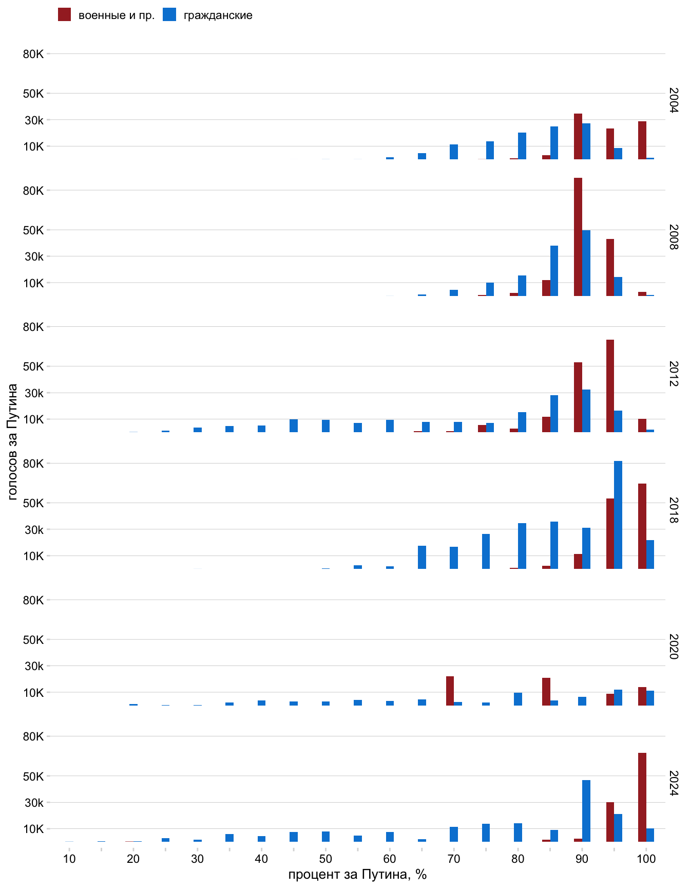

Выборы в России из-за границы
Как голосуют на российских выборах граждане РФ проживающие за границей
Коротко
В 2020 году мне стало интересно, как проголосовала заграница на референдуме по изменению конституции. В результате, родилась вот такая короткая заметка. В связи с предстоящими выборами (начал я писать до) я решил посмотреть ретроспективно на прошедшие выборы. Количество избирателей за границей порядка 1.7% от всех избирателей. Явка в странах за границей сильно варьирует от 2 до 70%, причем она выше там где больше про-правительственных избирателей, но есть ньюансы. Топ пять стран (50% от всех избирателей) это бывшие советские республики: Грузия, Молдова, Эстония, Украина, Латвия, Беларусь. Во многих из этих республик голосуют военные. Поэтому очень важно понимать, что имеется в виду когда говорится “российский изибратель за границей”, часто это либо военные, либо люди на территории с российским военным присутствием.
Если же задаться вопросом и рассмотреть заграничные страны как некий референс отношения к текущей ситуации в России в каждый конкретный момент, то нужно выбрать эти страны аккуратно.
Я не журналист, просто люблю находить какие-то смыслы с помощью данных. В этот раз вышло немного больше чем в 20-ом. Собственно статья по моим данным вышла в Новой газете, за что большое спасибо Алесе Соколовой. Подписывайтесь на её канал. Если есть какие-то мысли пишите мне в телеграм @vearlen.
Общие сведения
В 2024 году за пределами России проживает 1 890 8631 избирателя, это 1.7% от всех избирателей. Если взять число проголосовавших в 2018 году (474366) то получится что в среднем голосует 25%.
Явка
Подробную явку оценить довольно сложно, т.к. сведения о проживающих в разных странах не всегда совпадают с годом голосования2 и не всегда легко доступны и достоверны. Ниже приведенный график дает общее представление, разброс явки от 2 до 70%. Лидируют: Республика Молдова, Латвия, Литва, Греция, Эстония, бывшие советские республики.
Явка в Австрии 7% или 14%, последняя если считать относительно проживающих в Вене. На последние выборы президента в 2018 году в Вене пришло 2248 человека, в Австрии в 2018 году проживало 32 4293 человека с российским гражданством из них примерно 50% живет в Вене.
Где живет большинство
В Европе проживает в районе 679 028 человек, 0.6% от всех избирателей и 35% от всех проживающих за рубежом. Больше всего в Европе россиян живет в Германии - 237 816, 35% от всех “европейцев”. Голосует в Германии тоже в районе 14%, на выборах 2018 проголосовали 33479 человека.
Как менялось количество и динамика голосования
В целом кол-во голосующих с 2004 года росло, за исключением референдума 2020 года, на который пришло в два раза меньше чем на выборы 18-го.
Если посмотреть в целом на распределение голосующих за рубежом, то по сравнению с официальными результатами (показаны желтой точкой) результаты выше за Путина/Медведева. Единственное исключение - референдум 20-го года, 70 % против официальных 78%.
Если смотреть на европу в целом как на регион, картина такая же.
При том что некоторые страны довольно разительно отличаются от официального результата, см. ниже результат Великобритании. Тут после 12 года результат голосования значительно ниже официального.
А как обстоят дела в Германии? Где живет больше всего российских европейцев. Тут наблюдается интересный тренд, в 2012 году результат у Путина ниже официального, а в 18-ом снова поднялся и даже стал больше. В 20-ом же вновь разрыв довольно большой.
Давайте попробуем понять, за счет чего в среднем по за границе результат получается выше, чем официальный. Ниже показаны страны, составляющие 75% от всех проголосовавших по годам.
Как видно в 2004 году лидируют Грузия, Республика Молдова, Эстония, Украина - 45% в сумме.
В 2008 это Грузия, Молдова, Эстония, Украина - 56% в сумме.
В 2012 году по понятным причинам Грузия исчезла появились Абхазия и Осетия. В топ шесть стран, составляющих 52% от проголосовавших, впервые попала Германия.
В 2018 исчезла Украина и кол-во стран набирающих 75% выросло до 18, для сравнения в 2008 их было 10. Германия переместилась на третье место по количеству проголосовавших. По-прежнему в пятерку в основном входят страны бывшие советские республики.
В 2020 году в топ 75% появилась Сирия, хотя на этим голосовании людей проголосовавших было на 60% меньше, чем в 2018 году.
В 2024 вперед вырвался неожиданный кандидат - Кипр :) с 53216 голосующими :)
В целом в любой год топ 5 стран дают почти 50% избирателей за рубежом и эти топ пять это:
Я выделил участки где голосуют военные или же которые находятся на территории с военным российским присутствием.

У Важных историй получилось, что процент военных и квазигосударств составляет 46%, у меня вышло в районе 37% в 2024.

Так что когда вам говорят россияне проголосовавшие за рубежом будьте внимательны. Республика Молдова с 80000 проголосовавших, это военные части в Приднестровье. В Грузии в 2004 и 2008 году очень много участков на территории минобороны. Эстония и Латвия - там, по-видимому, действительно ходят голосвать про-российски настроенные граждане. И их там, судя по всему, много - явка 39% и 55% соответственно. А вот 53000 российских киприотов?!
Как же голосует Европа?
Учитывая выше сказанное нужно определиться в терминологии. Точнее нужно выбрать страны, на которые мы будем смотреть как на прекрасную Россию будущего те места, где люди голосуют как думают. При этом не следует забывать, что частью избирательного процесса является - конкуренция на выборах, альтернативные кандидаты, т.е. всё чего нет даже у тех кто живет за границей. По сути они выбирают между Путиным и остальным. Как написал Владимир Пастухов: “На тоталитарных выборах без выбора есть только две формы протеста: пассивная – не приходить на выборы и активная – прийти и испортить бюллетень. Все остальное от лукавого.”
Очереди в участки
Мы все видели огромные очереди в участки за рубежом.
Exit poll и ЦИК
На графике ниже показано сравнение “явки” 2018 года (данные ЦИК) и явки 2024 года (данных экзит пол, https://voteabroad.info/). Надо понимать, что часто в 2024 это не явка, а количество опрошенных людей, но тем не менее пока есть только такие данные. В подавляющем большинстве участков людей меньше в 24 чем в 18-ом, что никак не вяжется с картинкой которую нам показывали и которую я видел сам - толпы людей. Видимо ключевая проблема в том, что я сделал неправильный вывод из картинки - количество людей в очереди никак не меняет количество людей прошедших через участок. Точнее контроль за количеством в руках УИКов все равно. Хотят пропустят больше, а не хотят не пропустят.
Можно сравнить явку по экзит полам и ЦИК.
В среднем exit poll занижает явку на 26 %.
Есть ли связь между явкой и процентом?
В целом будто-бы и нет очевидных накруток, но если присмотреться, то видно что чем больше людей на участке, тем меньше вариативность. После 3000 человек на участок процента ниже чем 60% за Путина нет.